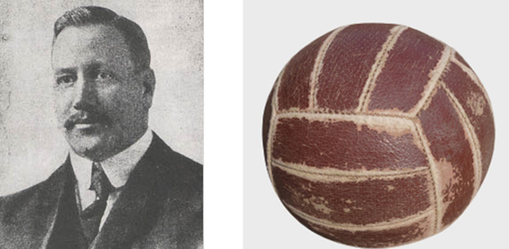

The History Of Volleyball
History
 Volleyball has a Long history dating back to 1895. Invented by William G. Morgan of the YMCA of Holyoke, Massachusetts. The original game for volleyball was "Mintonette" (FIVB) but then in 1896 the name was changed to “Volley Ball” then changed again in 1952 to a single word “Volleyball”.He even met the inventor of basketball, James Naismith in 1981. After that encounter he was inspired to make a game “less violent”(FIVB) and more suited to everyone. He wanted to make a game like no other “designed to be a combination of basketball, baseball, tennis and handball.”(OLYMPIC HISTORY), but this also caused some problems for him. Such as, how do you make a ball that can be hit, set, not hurt too much, and also be light enough to fly over the net?
Who was Morgan?
Morgan had no comparisons to any other games he could use. He couldn't use a basketball skin because it was too heavy. He explained this starting with the net height, ”We raised it to a height of about 6 feet, 6 inches (1.98 meters) from the ground, just above the head of an average man. We needed a ball and among those we tried was a basketball bladder, but this was too light and too slow. We therefore tried the basketball itself, which was too big and too heavy."(FIVB) But he figured out a way to make these balls. The ball consisted of a leather exterior, with rubber inside to keep the ball aired up, with a “circumference was not less than 25 and not more than 27 inches” the ball was then manufactured by the A.G. Spalding & Bros firm. Back then the game was a lot different than it is today.
History of the rules
According to the FIVB Morgans game had an unlimited number of people being able to play the game at a time. In comparison to when in 1918 the number of players per team was only 6 people per side of the court. Some changes were made In the 1900s also, the ‘dribbling line’ was removed. According to NCVA(Northern California Volleyball association) it was a part of the original rules . Another rule change in 1900 was changing the original net height of 6’6 to 7’6 then to 7’11 for mens in the 1950s.